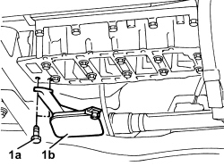

1084B28 engine oil intake pump - r + r with crankcase sump removed
- Path
- Procedures > 10 ENGINE > 1084 ENGINE LUBRICATION > 1084B ENGINE OIL LUBRICATION CIRCUIT > 1084B28 engine oil intake pump - r + r with crankcase sump removed
- Kind
- repair procedure (removal / refitting; the operation number is the code)
- Applies to
- engines: 1.4 8v; all production periods
- Interactive page
- https://sloeber94.github.io/elrnDB-fDbl/en/#/2584290
Applies to: engines: 1.4 8v; all production periods
 Removing
Removing
 Refitting
Refitting1. Undo the bolts (1a) and remove the intake (1b).

Applies to: engines: 1.4 8v; all production periods
Refitting
RemovingTopics that link to this page (6)
- 1020D14 front crank shaft oil seal cover - r + r and replace seals for versions with oil pump on crank shaft, timing side
- 1020D16 front crankshaft oil seal cover - r+r and replace gaskets for versions with airconditioner
- 1028H12 SET OF PISTONS WITH CONNECTING RODS - R.R WITH CYLINDER HEAD/S REMOVED
- 1028H20 piston with connecting rod - r r
- 1028H21 piston with connecting rod - r r
- 1084B26 emgine oil intake duct - r r